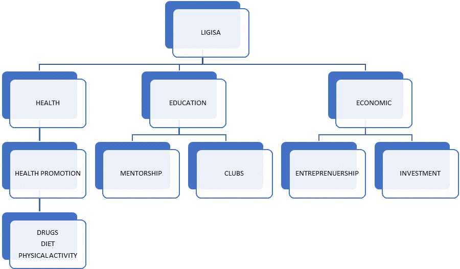

Ligisa Youth Network was founded in the year 2021 by like-minded youths who felt the need for a platform where people could trade ideas and implement projects on youth empowerment. Three thematic areas were agreed upon; health, education and personal finance.
Based on the national youth survey, health problems affecting the youth of Homabay County include drug and substance abuse, sexually transmitted infections and early pregnancy. Health promotion and disease prevention is a feasible way of promoting healthy lifestyles among the youth. The main strategy agreed by members is to enhance awareness and facilitate access to information. The objectives of the organization as regards youth health is:
Homabay County has a primary school enrollment of 98%. This number reduces to about 58% in secondary school and dwindles even further by the time youths get to tertiary level. Reasons for dropping out include teenage pregnancies, lack of school fees and lack of role models. Ligisa will support youth to pursue education both formally and informally to levels they desire in the following ways:
Is a trusted relationship between a mentor and mentee which entails influence, guidance and direction.
Types of MentorshipThe secondary school program will utilize group mentoring. The mentorship will focus mainly on career guidance. The program is designed to span 3 sessions. The network will coordinate 3 sessions per term. The sessions are meant for those in first and second year of secondary before selection of main subjects.
| Session Number | Session Title |
|---|---|
| Session 1 | The Life I Want to Live as an Adult |
| Session 2 | Self-Assessment of Interests and Talents |
| Session 3 | Personal Work Values and Competencies |
| Session 4 | Rate Your Skills |
| Session 5 | SHS Career Interest Clusters The Career Wheel |
| Session 6 | My Family and My Career Choices |
| Session 7 | Personal Career Exploration Mapping Too |
| Session 8 | Career Sector Exploration Sheet |
| Session 9 | Career Pathways Action Plan |
| Session 10 | Career Pathways Portfolio |
| Session 11 | Career Study Planner |
| Session 12 | Summary of My Career |
| Session 13 | Multiple Career Development Pathways |